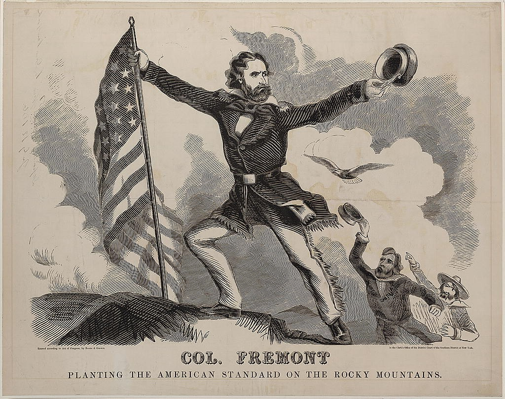

Directions: Read the full text, then answer the questions at the end.
The Kansas-Nebraska Act of 1854 repealed the Missouri Compromise line and left slavery in the territories to popular sovereignty, and in the North the repeal did what no abolitionist pamphlet had done. Within months, anti-Nebraska meetings across the free states were naming themselves Republican, in echo of Jefferson's party, and gathering a coalition that agreed on little else. Ex-Whigs, Free Soilers, anti-Nebraska Democrats, and voters moved by temperance and by suspicion of immigrants all found one plank they could stand on together. Congress must bar slavery from the federal territories. The plank touched slavery nowhere else. Where state law protected it, the new party promised to leave it alone, and its leaders said barring extension would put slavery itself in the course of ultimate extinction.
The plank rested on a creed the North told about itself. Free labor, its believers held, was honorable labor. A man who worked for wages was not trapped in his station. He had a right to rise by his work, save, buy land, and become independent, and the territories were the ladder the next generation would climb. Slavery, in this argument, degraded work itself, teaching that labor was fit only for the enslaved, and let great slaveholders monopolize the common lands that should have made poor men owners. The creed had a shadow, and the lesson names it. A party of free soil often meant soil kept free of Black people as well as of slavery. Oregon and Indiana had written Black exclusion into their laws, and many Republicans who voted against slavery's extension voted gladly to keep free Black families out of their states.
The party tested its arithmetic in 1856. Its first presidential nominee was John C. Frémont, the explorer called the Pathfinder, whose western expeditions had made him famous and who had no votes in Congress to defend. Frémont carried eleven of the sixteen free states. The Democrat James Buchanan won, on Pennsylvania and the South, but the returns taught both sections the same lesson. A party drawing no strength from the slave states had come within reach of the presidency in its first campaign, purely on northern votes. Southern editors read the map as a warning. So did Republicans, who concluded that they did not need to win a single southern state to govern the country, only to hold the North together.

While the party organized, a lawsuit was climbing toward the Supreme Court. Dred Scott was enslaved in Missouri and carried by his owner, an army surgeon named John Emerson, to postings in Illinois, a free state, and at Fort Snelling, in what is now Minnesota, where the Missouri Compromise barred slavery. Scott married there, and his daughters were born on free soil and in free waters. When the family was brought back to Missouri, Scott sued for their freedom in 1846, arguing that residence on free soil had made them free. The case took eleven years. Owners died, the suit was retried, and politicians in both sections understood that the Court's answer would reach far beyond one family in St. Louis.
The Court answered on March 6, 1857, two days after Buchanan's inauguration, Chief Justice Roger B. Taney writing for a majority of seven. First, Black people, enslaved or free, were not and could not become citizens of the United States. They had been regarded, Taney wrote, as beings of an inferior order, with no rights which the white man was bound to respect. Second, Scott's residence on free soil had not freed him. On his return to Missouri, Missouri law decided his status. Third, and widest, the Missouri Compromise had been unconstitutional from the beginning. Congress had never held power to bar slavery from the territories, because enslaved people were property, and the Constitution protected property. The holding voided the Republican platform itself, the one act the party existed to perform.
Two justices, John McLean and Benjamin Curtis, dissented, and Curtis's opinion did the heavier work. He answered Taney's history with the founding generation's own record. At ratification, free Black men had been citizens and voters in five of the original states, New Hampshire, Massachusetts, New York, New Jersey, and North Carolina, voting on equal terms with other citizens. People who had helped ordain the Constitution could not have been excluded from its citizenship by the document they made. Frederick Douglass, answering in speeches that refused despair, also wrote the private letter read in this lesson's activity, to his former master Hugh Auld. It is a courteous page from a man seeking the facts of his own childhood, inside a life the Court had just placed outside the Constitution's people.
In June 1858 Abraham Lincoln accepted the Republican nomination for the Senate and opened with the House Divided speech, read in this lesson's activity. A house divided against itself cannot stand, he argued; the government could not endure permanently half slave and half free. He charged that the repeal of the Missouri line, the Dred Scott decision, and the administration's policy fitted together as parts of one design to make slavery national and perpetual. The Court had tried to remove the slavery question from politics by deciding it as constitutional law. Within three years the party whose platform the decision voided had elected a president on that platform, and the Union the decision was written to preserve had begun to dissolve.
1. State the coalition the Republican Party gathered in 1854, naming the groups the reading lists, and state its single plank and what that plank promised to leave alone.
2. State the free labor creed as the reading gives it, and state the shadow the reading names inside it, naming the two states whose exclusion laws it cites.
3. State the result of the election of 1856, naming the Republican nominee, the states he carried, and the lesson both sections drew from the returns.
4. State Dred Scott's claim, naming where he had lived and the ground of his suit, and state the three holdings of Taney's decision of March 6, 1857.
5. In a short paragraph, answer the lesson question from the reading. State what the Republican Party promised and what the Supreme Court tried to settle in Dred Scott, and close by stating what Curtis's dissent and Lincoln's House Divided speech each answered, and what became of the Court's settlement within three years.
1. State the coalition and the single plank. The anti-Nebraska meetings of 1854 named themselves Republican, in echo of Jefferson's party, and gathered ex-Whigs whose party was dying, Free Soilers, anti-Nebraska Democrats who broke with their own administration, and voters moved by temperance and by suspicion of immigrants. The single plank was that Congress must bar slavery from the federal territories. The plank touched slavery nowhere else. Where state law protected it, the party promised to leave it alone, and its leaders said barring extension would put slavery in the course of ultimate extinction.
2. State the free labor creed and its shadow. Free labor held that labor was honorable, that the laborer was not trapped in his station, and that he had a right to rise by his work, save, buy land, and become independent, with the territories as the ladder for the next generation. Slavery degraded work itself, teaching that labor was fit only for the enslaved, and let great slaveholders monopolize the common lands. The shadow was exclusion. A party of free soil often meant soil kept free of Black people as well as of slavery, and Oregon and Indiana had written Black exclusion into their laws.
3. State the result of 1856. The Republican nominee was John C. Frémont, the explorer called the Pathfinder. He carried eleven of the sixteen free states in the party's first national campaign. The Democrat James Buchanan won, on Pennsylvania and the South. Both sections drew the same lesson from the returns. A party drawing no strength from the slave states had come within reach of the presidency on northern votes alone, and Republicans concluded they needed only to hold the North together to govern the country.
4. State Scott's claim and the three holdings. Dred Scott, enslaved in Missouri, had been carried by his owner, the army surgeon John Emerson, to Illinois, a free state, and to Fort Snelling, in what is now Minnesota, where the Missouri Compromise barred slavery. He sued in 1846 on the ground that residence on free soil had made him and his family free. Taney's decision of March 6, 1857 held, first, that Black people, enslaved or free, were not and could not become citizens of the United States; second, that Scott's residence on free soil had not freed him, Missouri law deciding his status on his return; and third, that the Missouri Compromise had been unconstitutional from the beginning, because Congress had never held power to bar slavery from the territories.
5. Answer the lesson question from the reading. The Republican Party promised one act of Congress, that slavery would be barred from the federal territories, leaving it untouched where state law protected it and putting it, its leaders said, in the course of ultimate extinction. The Supreme Court in Dred Scott tried to settle the whole question as constitutional law, holding that Black people could not be citizens, that residence on free soil freed no one, and that Congress had never had power to enact the party's one promise. Curtis answered the citizenship holding from the founding record itself, free Black citizens and voters in five original states at ratification. Lincoln answered in the House Divided speech that the repeal, the decision, and the administration's policy were parts of one design to make slavery national. Within three years the party whose platform the Court had voided elected a president on it, and the Union the decision was written to preserve had begun to dissolve.